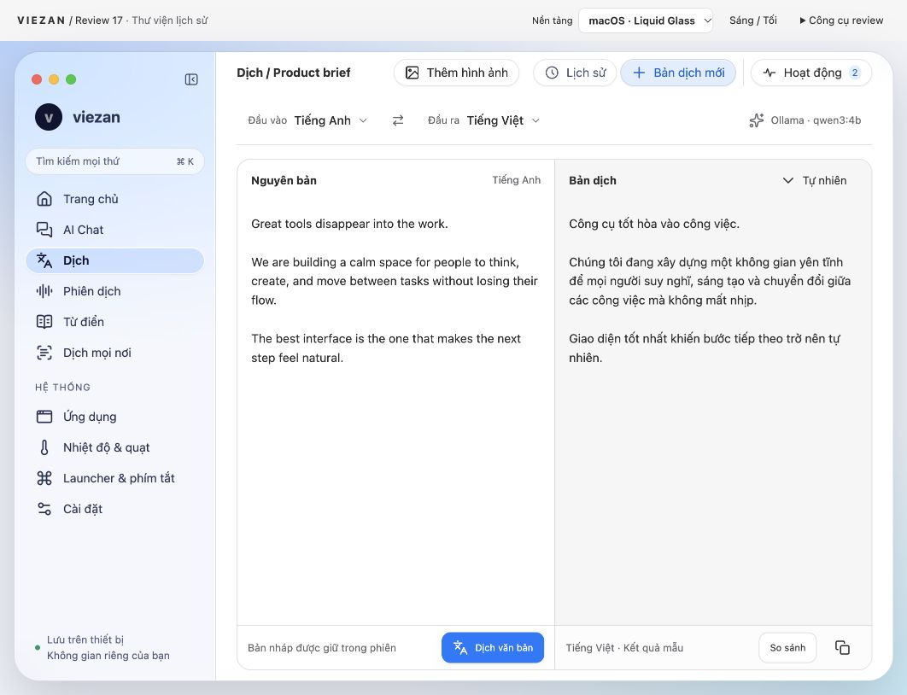
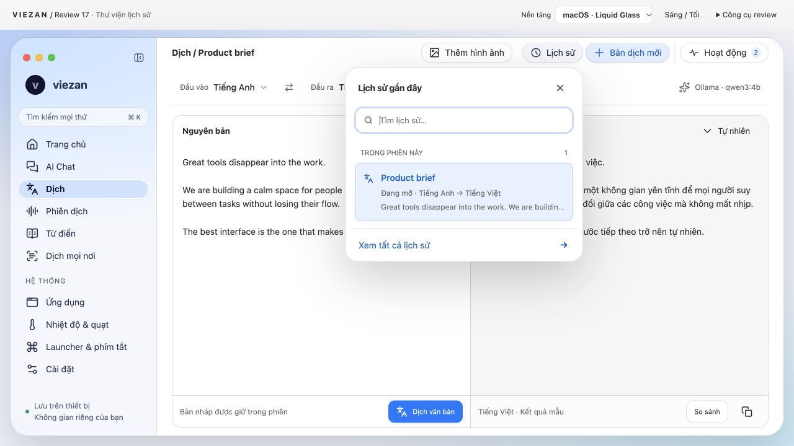
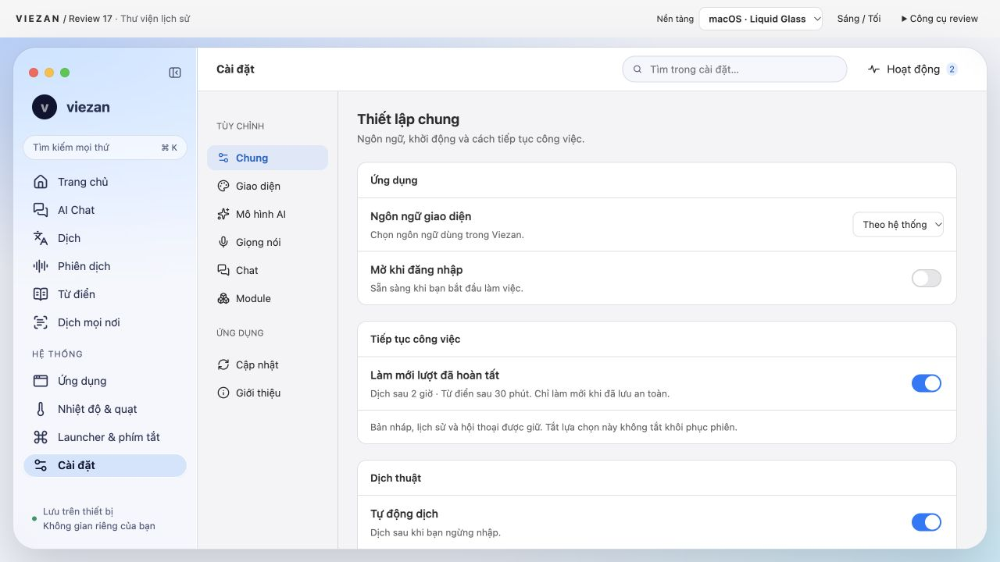
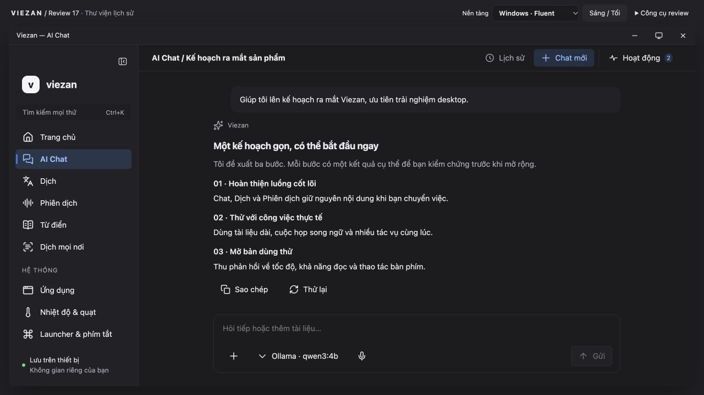
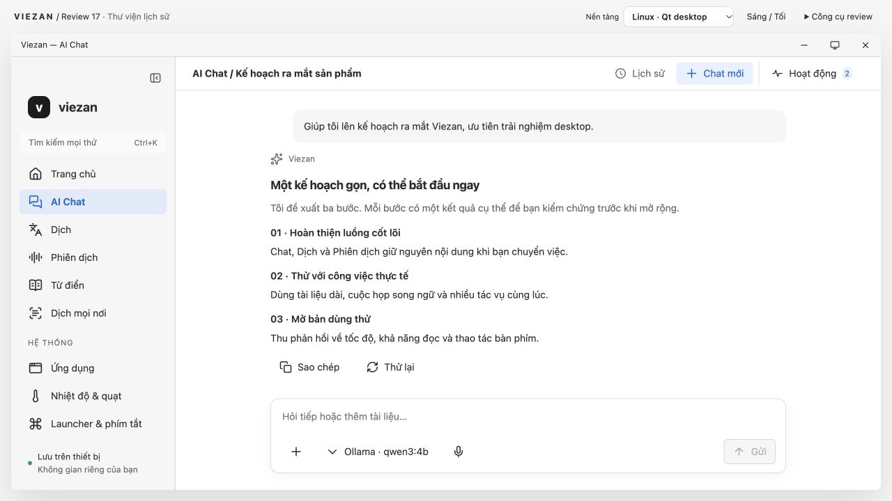
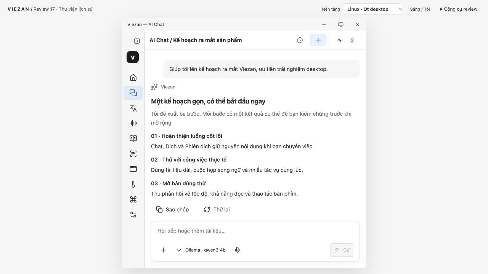
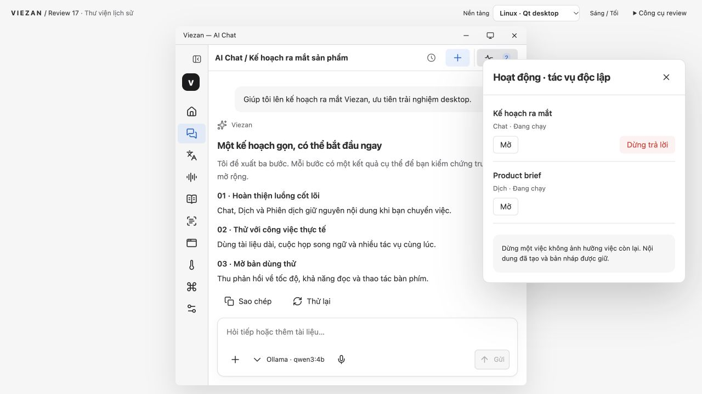

Viezan · Audit Review 17
26.10.2026 · Prototype desktop và đối chiếu native readiness
Viezan đã có nền tảng UI hiện đại, nhưng chưa nên duyệt thiết kế cuối hoặc gọi là ứng dụng native hoàn chỉnh trên macOS, Windows và Linux. macOS gần hướng mong muốn nhất; Windows/Linux hiện mới là adapter trình bày của prototype web.
Báo cáo đầy đủ: findings, source, gates và giới hạn
Ưu tiên sửa: tên truy cập của nút tạo mới ở compact; Activity tràn khỏi khung mô phỏng. Các ảnh Windows/Linux dưới đây là CSS preview trên macOS, không phải runtime native.
1. macOS · Dịch
Tốt về cấu trúc; chưa đạt nghiệm thu native
Tiêu đề liền mạch, input/output và footer thẳng hàng. Sidebar và chrome tách khỏi vùng đọc. Khoảng trống trong editor phù hợp vùng soạn dài; không nên thêm trang trí để lấp đầy. Toolbar còn nhiều pill có cùng độ nổi; nên giảm viền/bóng của tiện ích phụ và ưu tiên toolbar hệ thống.

2. Lịch sử nhanh
Hướng tương tác phù hợp
Popover mở dưới nút, không thay trang hoặc phủ scrim, có mục đang mở và Xem tất cả. Escape đóng và trả focus đúng nút trong lượt audit. Hiện chỉ một mục mẫu; chưa nghiệm thu danh sách lớn, tên dài, bàn phím điều hướng danh sách, đổi kích thước khi đang mở.

3. Cài đặt
Tốt ở desktop; cần thử khung hẹp
Search rõ, nhóm cài đặt và các hàng có phân cấp. Hai cột điều hướng vẫn có trách nhiệm riêng. Chưa kiểm chứng macOS Settings scene, Command-comma, text scaling, tìm kiếm EN/JA hay screen reader; bản này chỉ là trang prototype.

4. Windows · Chat tối
Đọc được; mới là bản mô phỏng
Có caption bar, Ctrl+K, bề mặt phẳng và active navigation. Đây là CSS chạy trong browser trên Mac; font Segoe có thể fallback. Chưa xác nhận Mica, acrylic flyout, contrast themes, Snap, DPI hay Narrator. Dùng chung bố cục là hợp lý nhưng cần Windows controls và window behavior thật.

5. Linux · Chat sáng
Nền tảng hợp lý; chưa có bản sắc desktop rõ
Mặt phẳng và viền nhẹ phù hợp công cụ desktop. Nhãn Qt/KDE không chứng minh tích hợp KDE. Cần chốt Plasma là mục tiêu chính của Qt hay chỉ hỗ trợ trung tính; GNOME có convention khác. Chưa kiểm chứng system theme, font, file portal, Wayland, AT-SPI hay decoration thật.

6. Linux · khung mô phỏng 640 px
Có lỗi accessibility cần sửa
Rail và vùng đọc/composer co lại hợp lý. Nút Chat mới chỉ còn dấu cộng; accessibility tree trả về button không có tên. DOM .uh-new không có aria-label/title, trong khi span bị display:none. Thêm tên truy cập ổn định, tooltip và kiểm tra các nút icon ở mọi feature. Đây là khung mô phỏng 640 trong viewport 1280×720, không phải Linux thật.

7. Hoạt động trong khung hẹp
Chưa đạt layout acceptance
Cửa sổ mô phỏng x=320…960 nhưng bảng Hoạt động x=880…1250: tràn 290 px ra ngoài bên phải. CSS neo dialog theo viewport browser, không theo cửa sổ mô phỏng. Cần neo/clamp theo container ứng dụng. Chat có Dừng trả lời, tác vụ Dịch cùng trạng thái Đang chạy chỉ có Mở: cần làm rõ hoặc bổ sung hành động hủy theo capability; chưa có bằng chứng hai tác vụ chạy thật.

Nguồn chính thức